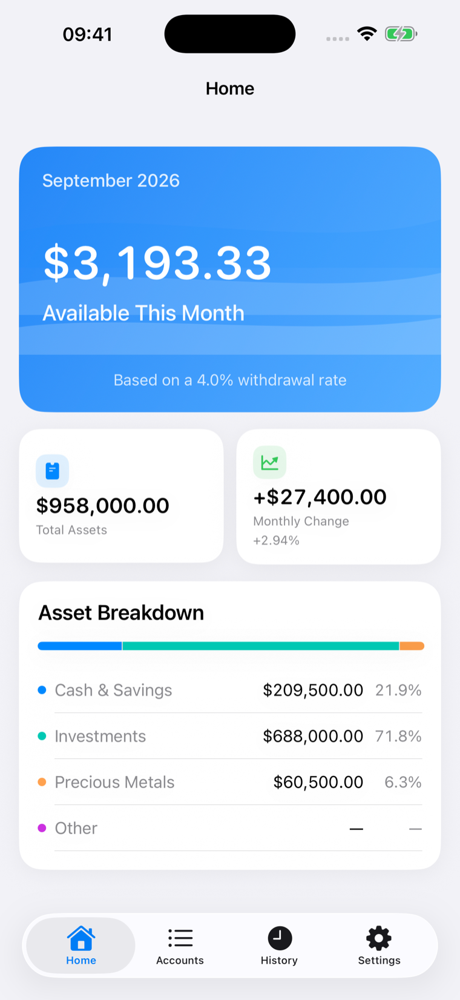

Private monthly planning · iPhone
Know what you can spend this month.
Update assets once a month and turn them into one clear planning number.

Guides / Learn
Monthly FIRE Budget
Turn assets and a planning rate into a monthly number.
Withdrawal Rate Planning
Explore a rate you choose.
Monthly Net Worth
Track assets without daily expense logging.
Gains vs. Contributions
Keep cash movements distinct from gains.
Gold & Precious Metals
Track value and quantity.